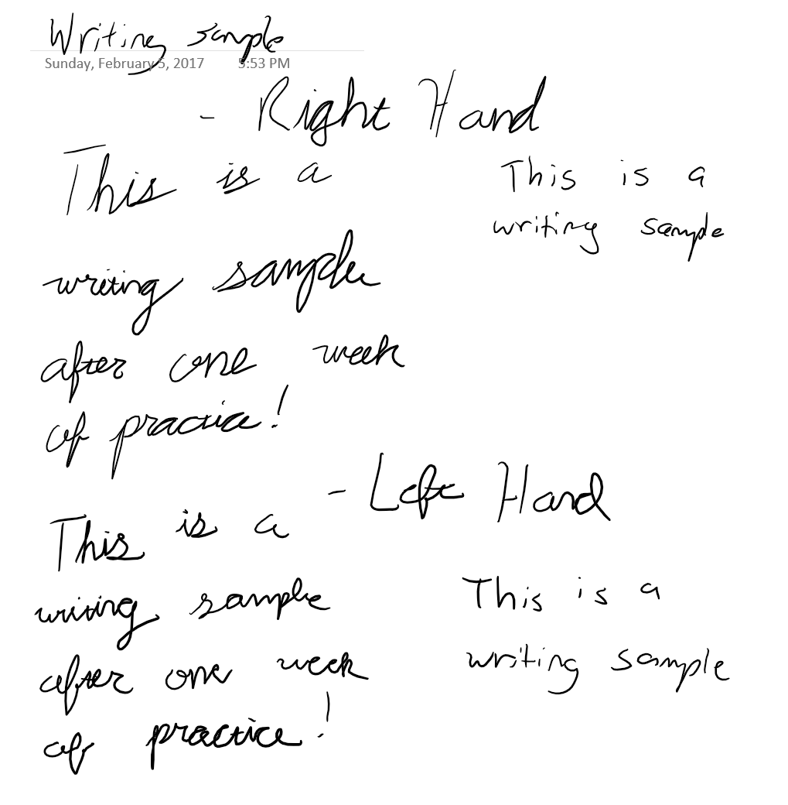

Handingwriting, Part 1
Posted on February 6, 2017
After a week of work I have made some progress in learning cursive and improving my handwriting with both hands.

Handwriting Sample for Week 1
Significant improvements with my lefthand print, but my righthanded cursive is still better than my lefts. Filling out the many letter practice sheets has turned out to be more time consuming than I had first realized. The hardest part about writing in cursive is taking the many letters and learning the best ways to connect them. I have trouble with the letter ‘r’ in particular. Also annoying is consecutive ‘i’ and ‘t’ characters given that I am supposed to dot and cross them after I have already writen the word.
Even so, I’ll continue to work at this until I am satisfied.